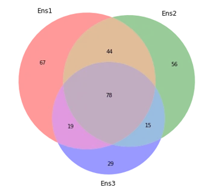
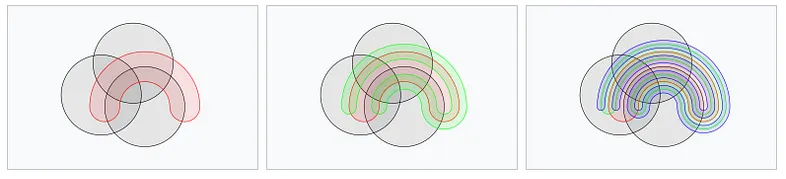
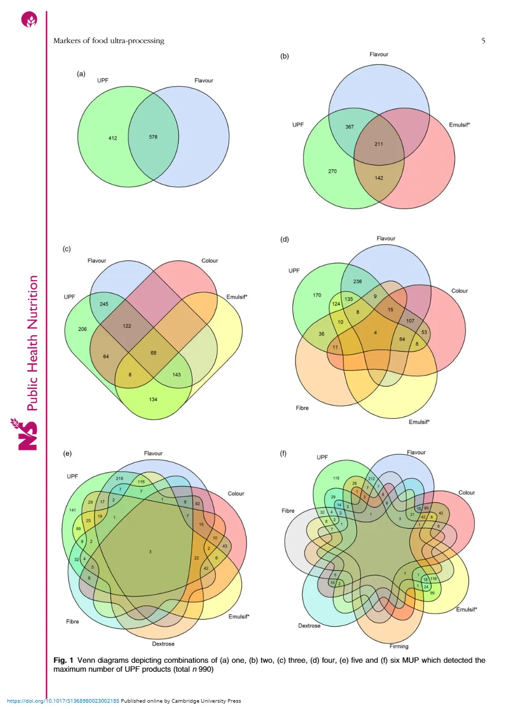
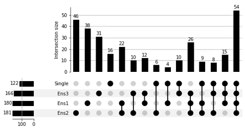
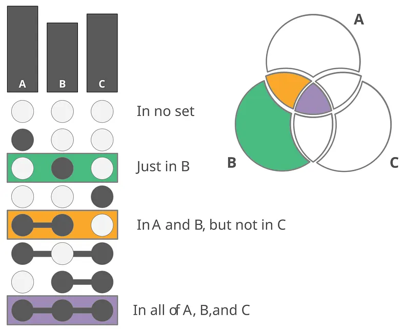
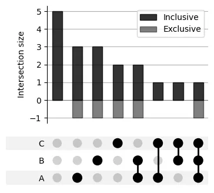

In the dining hall of Gonville and Caius College, Cambridge, students are treated each day to a view of a set of stained glass windows that commemorate some of the college's most noted scientists. Perhaps the simplest among these, and personally my favourite, are the three coloured overlapping circles commemorating John Venn, the inventor of the Venn diagram. Simplicity, I would argue, is the key feature of the Venn diagram. When it comes to data visualisation, the simplest means of conveying information effectively is very often the best.
The problem with Venn diagrams
Humans are inherently visual creatures. Raw numbers, particularly large sets of numbers, make very little intuitive sense to us. The entire field of data visualisation is built upon this premise. From pie charts to histograms to scatterplots, we've created many intuitive representations of data that immediately make sense to an audience. As a PhD student, and particularly one focused on computer vision, I've always been fascinated by visualisations and their role in communicating information effectively.
I was recently interested in visualising overlapping errors between multiple models in a model ensemble. Consider the case of three different binary classifiers. My goal was to visualise the interaction of errors between the classifiers in order to understand their diversity. The solution to this task is obvious to any high school student: Venn diagrams. Such plots very clearly show the overlaps between the different models in an intuitive manner, and can easily be created using Python or your language of choice.
However, next, I wanted to introduce a fourth model to my ensemble, and this posed a bit of an issue. How do I draw a Venn diagram that covers four different sets? And how about five? or six? Venn diagrams are incredibly useful for two or three sets, but it wasn't very clear to me how it could extend to more sets, at least not without compromising simplicity and symmetry.
It turns out that this is a problem that has occurred to many others, who've come up with some interesting solutions. John Venn himself proposed a set of diagrams that uses ellipses to get around this limitation. Yet others have come up with various interpretations of Venn diagrams for greater than three sets.
My favourite comes from a research paper from Germany titled "Flavour, emulsifiers and colour are the most frequent markers to detect food ultra-processing in a UK food market analysis". In true German fashion, the researchers use increasingly convoluted diagrams to demonstrate overlap between markers of ultra-processing in food, leaving the reader to squint ever increasingly to make sense of the diagram. Despite my criticism, the actual paper seems like a rather interesting study of ultra-processed food. Plus you have to admit, the diagrams do look rather pretty, if unintelligible.
The reader can clearly see that for any of these diagrams, as the number of sets increases, the diagram devolves into an undecipherable mess. The zen of the Venn is lost (term not coined by me, that honour goes to Frank Ruskey from American Scientist). Thus, we're faced with the question: is there a more intuitive and scalable way to tackle this problem?
Enter UpSet plots
The answer, as it turns out (in the author's humble opinion, at least) is yes! I'm referring to UpSet plots, introduced in 2014 by Lex et al. in the paper "UpSet: Visualization of Intersecting Sets". These plots are increasingly replacing Venn diagrams in scientific writing, yet many people, especially outside of academia, are unaware of their existence.
An UpSet plot is essentially a bar chart on steroids designed to show set overlap. The funky looking circles give the reader an intuitive view of which overlap a given bar in the chart depicts. For instance, a bar with a count of 12 might show the overlap between two specific models. The horizontal bars on the side additionally visualise the sizes of each set.
While it's not quite as intuitive as a Venn diagram, the reader can easily determine overlap between any given combination of sets by finding the appropriate bar. The following illustration shows the equivalence between a 3-set Venn diagram and an UpSet plot — each segment of the Venn diagram corresponds to a specific row in the UpSet plot.
UpSet plots in Python and R
UpSet plots have become increasingly popular recently, and there are dedicated libraries in both Python and R for creating these plots. The Python variant, which I played around with, has a number of useful customisation options such as setting the minimum set sizes for inclusion in the plot, plotting distributions, flipping the orientation, etc.
A limitation: exclusive vs. inclusive counts
One limitation I've found with existing UpSet plots is that they are always exclusive, not inclusive. This is quite similar to Venn diagrams, but sometimes it is useful to convey inclusive numbers. For instance, in the previous example, the count for the overlap between three models might be 26. However, if we wanted all instances where these three models were incorrect, we would also need to add the cases where individual models were incorrect as well.
To overcome this limitation, I've created a fork of the UpSetPlot Python library that allows the user to specify whether they want to visualise both inclusive and exclusive numbers, by plotting the exclusive numbers on the bottom of the plot. This is still a work in progress, but I've created diagrams with this modified library.
The aforementioned inclusive plots are probably a niche use case that not many others have need of, but I still find it fascinating that the UpSet plot can easily be adapted to accommodate this need, and show this information in a clear and intuitive manner.
Conclusion
In closing, I would encourage more people to experiment with this little-known method of visualising set overlaps. Perhaps you may encounter even more interesting adaptations to suit UpSet plots to your needs (we haven't even touched on using colour as an extra dimension).
Venn diagrams are simple and beautiful, but quite limited, given that many real-world use cases involve more than three sets. Among all the alternatives for going beyond three sets, UpSet plots are, in my opinion, the most intuitive. They provide a scalable way of visualising set overlaps, and I'd love to see more of them in academia and beyond.